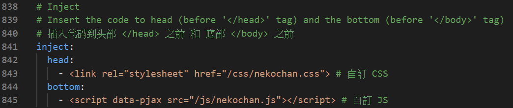

持續更新中
主題 Butterfly
提示 ：以下為 Butterfly 作者 Jerry 提供的文章，按照個人需求設置
主題安裝 Butterfly
主題設置 Butterfly
- Butterfly 安裝文檔(二) 主題頁面
- Butterfly 安裝文檔(三) 主題配置-1
- Butterfly 安裝文檔(四) 主題配置-2
- Butterfly 安裝文檔(五) 主題問答
- Butterfly 安裝文檔(六) 進階教程
主題美化 Butterfly (持續更新)
推薦文章
自訂CSS/JS
在開始美化主題之前要先知道 inject(注入) 簡單解釋就是使用自訂的檔案。
那為什麼要使用自訂檔案呢？假設一下你如果更改原本主題的檔案，那之後主題更新該怎麼辦？
這時使用 inject(注入) 會是一個好方法，但也有一個缺點是會讓網頁讀取速度變慢一點。
在 路徑 ：*\themes\butterfly\source\css\ 創建一個檔名為 .css 的檔案。（以下會以自訂CSS稱呼這個檔案）
在 路徑 ：*\themes\butterfly\source\js\ 創建一個檔名為 .js 的檔案。（以下會以自訂JS稱呼這個檔案）
在 _config.butterfly.yml(主題設定) 並搜尋 inject

像圖中一樣 分別在 head 和 bottom 打上 自訂CSS 和自訂JS 的路徑。
美化記錄
注意 ：以下為個人美化主題記錄，Butterfly版本 ：3.2.0
Menu Item 彩色選單
修改前

修改後

1 | /* Menu Item 彩色選單 */ |
Site Name & Subtitle 螢光標題
修改前

修改後

在 自訂JS 寫入
1 | /* Site Name&Subtitle 螢光標題 */ |
Card Bg 透明卡片
修改前

修改後

1 | /* Card Bg 透明卡片 */ |
Footer 漸層效果
修改前

修改後

1 | /* Footer 漸層效果 */ |
封面來源 ：